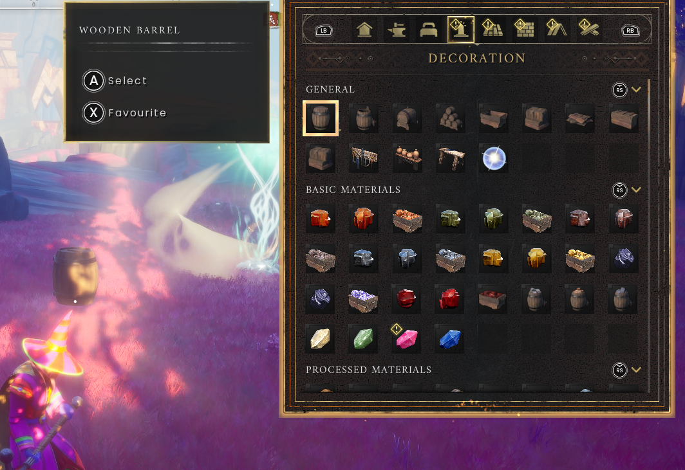

Building guide
Make a useful home before making a huge one.
On this page
Controls for this walkthrough
Interact E · Inventory Tab · Map M / J · Build B
Full controls and menu navigation · * marks a controller-equivalent mapping; the in-game prompt takes priority.
Start with a small, useful space
At the shared camp, ask where you may build. A sensible first project is a compact sheltered space with room to move, an available bed and access to storage and workstations. Test the layout before expanding.
- Choose a permitted area that does not block paths or entrances.
- Open Build mode and choose the piece you want.
- Read its material requirement and inspect the placement preview.
- Place it only when the game accepts the position.
- Walk around the finished piece. Check that doors, workstations and other players still have enough space.


A functional camp checklist
Your checklist
Saved on this browser only. Tick items as you go.
When a piece will not place
- Check whether you have the correct materials, not merely a similar-looking item.
- Look for overlap with terrain, other pieces or an occupied space.
- Try a simpler ground-level layout and check the current placement rules.
- Move away from restricted areas. Some game areas intentionally prevent construction.
- Read the preview warning rather than repeatedly clicking the same invalid location.
Further reading
For exact requirements, detailed walkthroughs and more depth, visit the topic pages below.
Wiki adaptations and data: RuneScape: Dragonwilds Wiki contributors, CC BY-NC-SA 3.0. See credits for source dates.